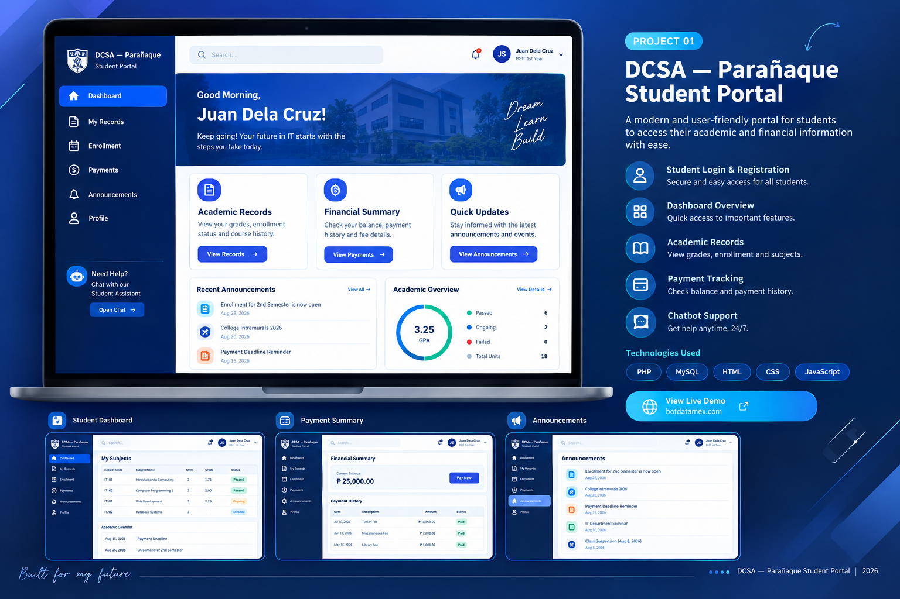

Web Development
HTML · CSS · JavaScript basics · Responsive layouts
Beginner / Developing
BSIT STUDENT · ASPIRING IT PROFESSIONAL
I build practical digital solutions and keep learning how technology can solve real-world problems.
Interested in web development, database systems, and application development.

01 / ABOUT ME
I am a Bachelor of Science in Information Technology student at Datamex College of Saint Adeline. I am developing my skills in web development, database management, system analysis, and troubleshooting through academic activities and practical projects.
I have explored website development using HTML, CSS, PHP, and MySQL, as well as system concepts such as a student portal and a salon booking and service management system. I have also practiced organizing business information and analyzing sales using Excel.
My goal is to grow into a dependable IT professional who creates useful, understandable, and reliable solutions. I value continuous learning, teamwork, honesty, and being willing to improve through feedback and practice.
02 / TECHNICAL SKILLS
These are learning areas to keep developing. Skill levels should be updated to match what I can confidently demonstrate.
HTML · CSS · JavaScript basics · Responsive layouts
PHP basics · Form handling · Application logic
MySQL · SQL basics · Database design concepts
Excel formulas · Tables · Charts · Sales reporting
VS Code · XAMPP · Basic website deployment
Basic troubleshooting · Cybersecurity awareness · AI literacy
03 / SELECTED WORK
Academic projects and practice work. Confirm each project's status and add screenshots, source-code links, and demos before presenting it as completed.

PROJECT 01 · LIVE WEBSITE ↗A web-based portal for Datamex College of Saint Adeline — Parañaque. The live homepage introduces academic records, financial information, quick updates, portal login, and a DCSA Info-Bot for general student questions.
Visual above is a concept showcase, not a captured screenshot of private portal pages. Features shown are based on the public homepage and project code provided.
A booking and service management system concept designed to organize appointments, service details, and salon supply inventory.
Status: update project stage and your contribution.
A business reporting exercise organizing graham balls production, sales, and expense data using spreadsheet calculations and reporting.
Batch 1 example: 120 pieces sold · ₱1,200 sales.
04 / HOW I APPROACH PROBLEMS
Sample troubleshooting topics based on common development tasks. Replace these drafts with the actual problems, diagnostics, fixes, and lessons from your own experience.
Possible causes: MySQL service is stopped or connection details are incorrect.
Diagnostic approach: Check service status, database name, credentials, host, and error logs.
Lesson: Verify configuration and test the connection before changing unrelated code.
Possible causes: Missing function definition, incorrect spelling, or an include file that was not loaded.
Diagnostic approach: Search for the function and inspect include/require paths and load order.
Lesson: Read the error carefully and isolate the smallest failing part.
Possible causes: File paths, case-sensitive filenames, missing files, or hosting database settings.
Diagnostic approach: Compare local and hosted configuration and inspect available error logs.
Lesson: Test the deployed version and document configuration differences.
Possible causes: Validation errors, incorrect credentials, or an authentication/database issue.
Diagnostic approach: Test valid and invalid inputs and review server-side validation without exposing passwords.
Lesson: Authentication must be tested securely, not just visually.
Possible causes: Incorrect formula ranges, duplicate rows, or numbers stored as text.
Diagnostic approach: Inspect the data, verify formula ranges, and compare sample results manually.
Lesson: Clean data and independently verify important calculations.
05 / EMPLOYABILITY
I aim to communicate clearly, listen to feedback, and work responsibly with a team. I am willing to learn new tools, document my work, and ask questions when requirements are unclear.
I want to gain real-world experience, improve my technical skills, and contribute to useful projects as an entry-level IT professional.
MY CAREER GOAL06 / PROFESSIONAL RESUME
A concise, entry-level IT resume focused on my education, developing technical skills, academic projects, and continued learning.
INFORMATION TECHNOLOGY · ENTRY-LEVEL
BSIT Student | Aspiring IT Support & Web Development Professional

Information Technology student at Datamex College of Saint Adeline with foundational experience from academic and personal practice in web development, database concepts, system analysis, and spreadsheet reporting. Interested in an entry-level opportunity where I can apply my current skills, learn from experienced professionals, and contribute to practical technology solutions.
Explored a portal concept with user login, registration, role-based pages, database connectivity, and student-facing information. Project details and implemented features should be verified before applying.
Worked on a proposed salon system concept covering appointment booking, service management, and inventory tracking for salon supplies.
Organized product sales and expense information, practiced formulas and summaries, and prepared business-reporting insights for a Graham Balls business activity.
Datamex College of Saint Adeline · Parañaque City
Parañaque National Highschool
Las Piñas National High School — Gatchalian Annex
This resume is formatted for an entry-level IT applicant. It does not claim paid IT work experience or certifications beyond the participation certificates shown. Confirm all project contributions and education dates before using it for applications.